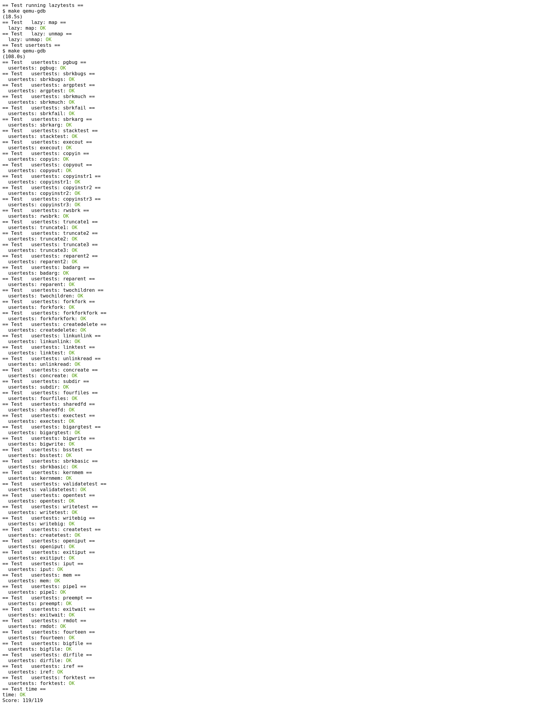

xv6-五
前言
这篇博客研究lazy page allocation机制
lazy page allocation
一个操作系统中可以包含多个进程，进程的地址空间所占用的虚拟地址空间之和一般远远大于实际的物理内存之和。
因此，一般操作系统通过通过如下几种方法，将进程的超大的虚拟地址空间映射到有限的物理地址空间中
- 不同虚拟内存映射相同物理内存
实际上，不同进程或相同进程的不同虚拟内存有很大一部分包含相同的数据(linux的glibc库, 内核的stack0数据)。因此，完全可以将这些虚拟内存指向相同的物理地址 - 延迟分配
往往进程会申请超过实际需要的内存，并且申请后不会立即使用。因此，当进程申请内存时，仅仅分配虚拟内存并记录在描述符中，但是并不实际分配物理内存并映射。也就是此时并不消耗物理内存。当进程真正访问该虚拟内存时，会产生page fault，从而在异常处理时完成实际的映射即可
Lab lazy allocation
本次lab帮助熟悉xv6的lazy allocation机制
Lazy allocation
要求
Modify the code in trap.c to respond to a page fault from user space by mapping a newly-allocated page of physical memory at the faulting address, and then returning back to user space to let the process continue executing. You should add your code just before the printf call that produced the “usertrap(): …” message. Modify whatever other xv6 kernel code you need to in order to get echo hi to work and all of both lazytests and usertests pass.
分析
一般来说，进程的内存分配，指同时分配virtual address和physical address，并将两者进行映射。
而lazy allocation则是将分配physical address的时间推迟到访问对应的virtual address时，才开始分配并映射。
因此，实际上实现lazy allocation的整体思路很简单，找到进程的内存分配和内存访问，将physical address的分配从内存分配部分的代码转移到内存访问处即可
实现
由于本次试验将进程的动态内存更改为lazy allocation方式，则更改growproc函数即可1
2
3
4
5
6
7
8
9
10
11
12
13
14
15
16
17
18// kernel/proc.c
// Grow or shrink user memory by n bytes.
// Return 0 on success, -1 on failure.
int
growproc(int n)
{
uint sz;
struct proc *p = myproc();
sz = p->sz;
if(n > 0){
sz += n;
} else if(n < 0){
sz = uvmdealloc(p->pagetable, sz, sz + n);
}
p->sz = sz;
return 0;
}
接着实现抽离出来的physical address的分配和映射，即lazy allocation的后半部分1
2
3
4
5
6
7
8
9
10
11
12
13
14
15
16
17
18
19
20
21
22
23
24
25
26
27
28
29
30
31
32
33
34
35
36
37
38
39
40
41
42// kernel/vm.c
// va page is lazy allocated
// yet now it should allocate the
// relative physical page in no time
uint64
lazy_allocate(uint64 va)
{
struct proc *p = myproc();
uint64 pa = -1;
pte_t *pte = 0;
// access the virtual address out of
// alloced virtual memory
if(va >= p->sz) {
return 0;
}
if(va % PGSIZE)
panic("lazy_allocate(): va not aligned\n");
// if access the guard page under the stack
// it should kill the process
pte = walk(p->pagetable, va, 0);
if(pte && (*pte & PTE_V) != 0 && (*pte & PTE_U) == 0){
printf("usertrap(): unexpected scause %p pid=%d\n", r_scause(), p->pid);
printf(" sepc=%p stval=%p\n", r_sepc(), r_stval());
return 0;
}
// if not enough physical memory
if((pa = (uint64)kalloc()) == 0) {
return 0;
}
if(mappages(p->pagetable, va, PGSIZE, pa,
PTE_R | PTE_W | PTE_X | PTE_U) != 0) {
kfree((void*)pa);
return 0;
}
return pa;
}
剩下的，则是在实际访问使用lazy allocation的virtual addresss时，完成最终的分配即可1
2
3
4
5
6
7
8
9
10
11
12
13
14
15
16
17
18
19
20
21
22
23
24
25
26
27
28
29
30
31
32
33
34
35
36
37
38
39
40
41
42
43
44
45
46
47
48
49
50
51
52
53
54
55
56
57
58
59
60
61
62
63
64
65
66
67
68
69
70
71
72
73
74
75
76
77
78
79
80
81
82
83
84
85
86
87
88
89
90
91
92
93
94
95
96
97
98
99
100
101
102
103
104
105
106
107
108
109
110
111
112
113
114
115
116
117
118
119
120
121
122
123
124
125
126
127// kernel/vm.c
// Copy from kernel to user.
// Copy len bytes from src to virtual address dstva in a given page table.
// Return 0 on success, -1 on error.
int
copyout(pagetable_t pagetable, uint64 dstva, char *src, uint64 len)
{
uint64 n, va0, pa0;
while(len > 0){
va0 = PGROUNDDOWN(dstva);
pa0 = walkaddr(pagetable, va0);
if(pa0 == 0)
pa0 = lazy_allocate(va0);
if(pa0 == 0)
return -1;
...
dstva = va0 + PGSIZE;
}
return 0;
}
// Copy from user to kernel.
// Copy len bytes to dst from virtual address srcva in a given page table.
// Return 0 on success, -1 on error.
int
copyin(pagetable_t pagetable, char *dst, uint64 srcva, uint64 len)
{
uint64 n, va0, pa0;
while(len > 0){
va0 = PGROUNDDOWN(srcva);
pa0 = walkaddr(pagetable, va0);
if(pa0 == 0)
pa0 = lazy_allocate(va0);
if(pa0 == 0)
return -1;
...
srcva = va0 + PGSIZE;
}
return 0;
}
// Copy a null-terminated string from user to kernel.
// Copy bytes to dst from virtual address srcva in a given page table,
// until a '\0', or max.
// Return 0 on success, -1 on error.
int
copyinstr(pagetable_t pagetable, char *dst, uint64 srcva, uint64 max)
{
uint64 n, va0, pa0;
int got_null = 0;
while(got_null == 0 && max > 0){
va0 = PGROUNDDOWN(srcva);
pa0 = walkaddr(pagetable, va0);
if(pa0 == 0)
pa0 = lazy_allocate(va0);
if(pa0 == 0)
return -1;
...
srcva = va0 + PGSIZE;
}
...
}
// kernel/trap.c
//
// handle the page fault by load page fault or
// store page fault.
// the virtual address trigggering the page fault
// is in stval
// So just map relative virtual memory to a new
// alloced physical memory
void
handle_page_fault()
{
uint64 va = PGROUNDDOWN(r_stval());
if(lazy_allocate(va) == 0)
myproc()->killed = 1;
}
// handle an interrupt, exception, or system call from user space.
// called from trampoline.S
//
void
usertrap(void)
{
int which_dev = 0;
uint64 scause = r_scause();
...
switch(scause) {
case 0xd:
// Load page fault
case 0xf:
// Store page fault
handle_page_fault();
break;
default:
printf("usertrap(): unexpected scause %p pid=%d\n", r_scause(), p->pid);
printf(" sepc=%p stval=%p\n", r_sepc(), r_stval());
p->killed = 1;
break;
}
if(p->killed)
exit(-1);
// give up the CPU if this is a timer interrupt.
if(which_dev == 2)
yield();
usertrapret();
}
除了直接访问lazy allocation的虚拟地址外，可能会操作包含有lazy allocation的页表，也需要特别处理一下1
2
3
4
5
6
7
8
9
10
11
12
13
14
15
16
17
18
19
20
21
22
23
24
25
26
27
28
29
30
31
32
33
34
35
36
37
38
39
40
41
42
43
44
45
46
47
48
49
50
51
52
53
54
55
56
57
58
59
60
61
62
63
64
65
66
67
68
69
70
71
72
73
74
75
76
77
78// kernel/vm.c
// Remove npages of mappings starting from va. va must be
// page-aligned. The mappings must exist.
// Optionally free the physical memory.
void
uvmunmap(pagetable_t pagetable, uint64 va, uint64 npages, int do_free)
{
uint64 a;
pte_t *pte;
if((va % PGSIZE) != 0)
panic("uvmunmap: not aligned");
for(a = va; a < va + npages*PGSIZE; a += PGSIZE){
if((pte = walk(pagetable, a, 0)) == 0) {
// unmap the lazy allocation
// page, so just ignore is ok.
if(va < myproc()->sz)
continue;
panic("uvmunmap: walk");
}
if((*pte & PTE_V) == 0) {
// unmap the lazy allocation
// page, so just ignore is ok.
if(va < myproc()->sz)
continue;
panic("uvmunmap: not mapped");
}
...
}
}
// Given a parent process's page table, copy
// its memory into a child's page table.
// Copies both the page table and the
// physical memory.
// returns 0 on success, -1 on failure.
// frees any allocated pages on failure.
int
uvmcopy(pagetable_t old, pagetable_t new, uint64 sz)
{
pte_t *pte;
uint64 pa, i;
uint flags;
char *mem;
for(i = 0; i < sz; i += PGSIZE){
if((pte = walk(old, i, 0)) == 0) {
// copy the lazy allocation
// page, so just ignore is ok.
if(i < myproc()->sz)
continue;
panic("uvmcopy: pte should exist");
}
if((*pte & PTE_V) == 0) {
// copy the lazy allocation
// page, so just ignore is ok.
if(i < myproc()->sz)
continue;
panic("uvmcopy: page not present");
}
...
}
return 0;
err:
uvmunmap(new, 0, i / PGSIZE, 1);
return -1;
}
结果
执行如下命令，完成实验测试1
make grade
